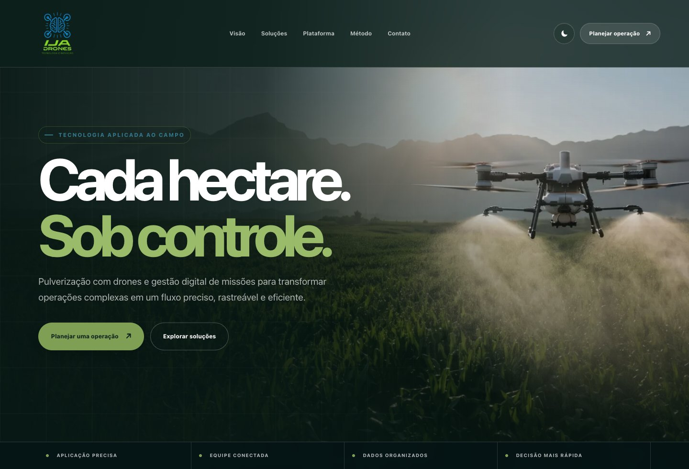
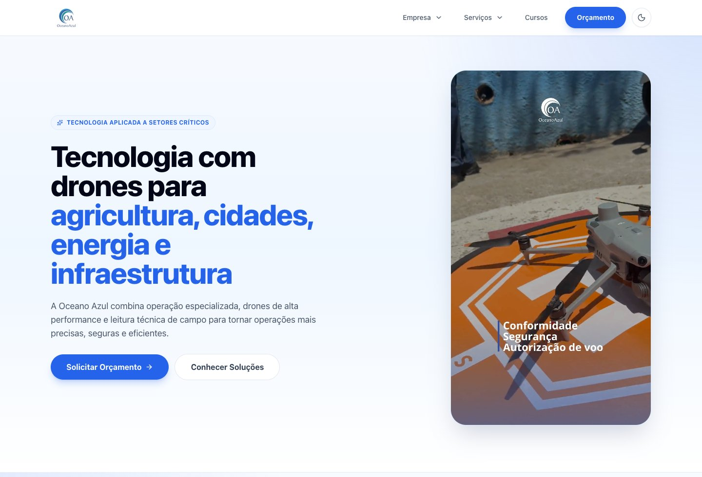

Operação urbana
Solicitações UVIS, agenda, ordens de serviço e acompanhamento de ações de campo.
Sou João Pedro Gomes. Conecto design, código e negócio para transformar processos complexos em experiências simples de usar.
Uma operação complexa.
Uma experiência conectada.
Desenvolvo e evoluo a plataforma que reúne solicitações, equipes, pilotos, frota, mapas e relatórios da IJA Drones. Um produto construído a partir das necessidades de quem faz a operação acontecer.
Conectar demandas, execução em campo e prestação de contas, reduzindo a dependência de planilhas e informações dispersas.
Regras de negócio, banco de dados, interfaces, integrações e manutenção evolutiva. Do fluxo do usuário à implementação.
Solicitações UVIS, agenda, ordens de serviço e acompanhamento de ações de campo.
Do orçamento ao contrato, da execução da missão ao controle financeiro.
Geolocalização, registros de voo DJI e importação de rotas KML.
Perfis de acesso, auditoria, anexos e exportações em PDF e Excel.
Meu projeto de gestão empresarial: estoque, vendas, PDV, financeiro e comunicação conectados. Conheça os módulos e as telas originais na apresentação do ProControl.
Comunicação entre usuários, grupos e setores integrada ao ambiente de trabalho.

Site institucional que apresenta as soluções da IJA Drones em pulverização agrícola, mapeamento e gestão digital de missões, conectando a operação de campo ao ecossistema de software da empresa.
Participei do desenvolvimento em colaboração com Pedro Henrique Cruz Vilas Bôas.

Site institucional dedicado às soluções com drones para agricultura, cidades, energia e infraestrutura. Reúne serviços, operações de campo e canais de contato para apresentar a atuação da empresa.
Participei do desenvolvimento em colaboração com Pedro Henrique Cruz Vilas Bôas.
Minha trajetória começou perto de quem usa o sistema todos os dias: no suporte, nos treinamentos e na rotina de um ERP. Foi ali que aprendi que uma boa solução começa com uma boa pergunta.
Hoje sou desenvolvedor full-stack, com foco em back-end e um olhar atento à interface. Trabalho com sistemas de gestão, automações e produtos que precisam fazer sentido tanto no código quanto na operação.
No IJA System, conecto essas duas pontas: a complexidade dos processos e a clareza de uma experiência bem resolvida.
Cada etapa trouxe um jeito melhor de entender problemas e construir soluções.
Conecte-se no LinkedInDesenvolvimento e evolução do IJA System. Operação de drones, fluxos UVIS e agro, integrações, relatórios e usabilidade.
Projetos corporativos e manutenção evolutiva com Java, PostgreSQL, Git, Docker e tecnologias web.
Do estágio em suporte técnico à atuação como analista: atendimento, treinamentos, banco de dados e suporte a ERP. A base do meu olhar para a experiência do usuário.
Sistemas de Informação UNOPAR · conclusão prevista para dezembro de 2026
Análise e Desenvolvimento de Sistemas SENAI Itajubá · 2022
Cursos e capacitações que complementam minha formação e ampliam meu repertório para trabalhar com sistemas, pessoas e processos.
Gestão de serviços de tecnologia.
SENAI Itajubá · 2022Introdução à Programação e Lógica de Programação.
Fundação BradescoFormação complementar em operação de drones.
Operação & tecnologiaMetodologia Lean e Planejamento Estratégico.
Gestão & melhoria de processosMercado Financeiro de A a Z, Fundos de Investimento, FIDC, Compliance e Perfil do Investidor.
Formação complementar em negóciosEstudos complementares à formação em tecnologia.
Conhecimento multidisciplinar
Tem um desafio, uma oportunidade ou uma ideia?
Me conta.
Vamos construir algo que faça sentido.